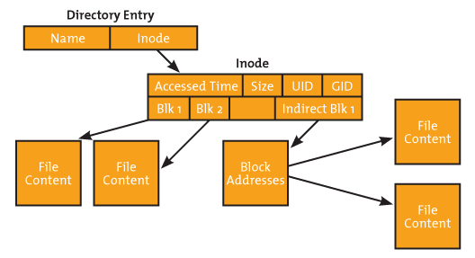
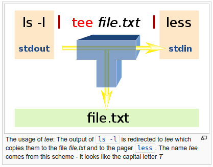

DevOps / Sys Admin Q & A #1A : Linux Commands
Why
sudo echo "deb http://pkg.jenkins-ci.org/debian binary/" >> /etc/apt/sources.list.d/jenkins.listdoes not work?
The issue is that it's the shell that handles redirection; it's trying to open the file with user's permissions not those of the process we're running under sudo.
So, we should do the following:
$ echo "deb http://pkg.jenkins-ci.org/debian binary/" | sudo tee -a /etc/apt/sources.list.d/jenkins.list
There is a way of doing the same thing not using "tee":
$ sudo sh -c "echo deb http://pkg.jenkins-ci.org/debian binary/ > /etc/apt/sources.list.d/jenkins.list"
Similarly, we can do this when we want to update package list on Debian:
$ echo "deb http://repo.mongodb.org/apt/ubuntu "$(lsb_release -sc)"/mongodb-org/3.0 multiverse" | sudo tee /etc/apt/sources.list.d/mongodb-org-3.0.list
The awk is most useful when handling text files that are formatted in a predictable way. For instance, it is excellent at parsing and manipulating tabular data. It operates on a line-by-line basis and iterates through the entire file.
The syntax looks like this:
awk '/search_pattern/ { action_to_take_on_matches; another_action; }' file_to_parse
In its simplest form, we can use awk like cat to simply print all lines of a text file out to the screen. Let's print out our server's fstab file, which lists the filesystems that it knows about:
$ awk '{print}' /etc/fstab
# /etc/fstab: static file system information.
#
# Use 'blkid' to print the universally unique identifier for a
# device; this may be used with UUID= as a more robust way to name devices
# that works even if disks are added and removed. See fstab(5).
#
# <file system> <mount point> <type> <options> <dump> <pass>
# / was on /dev/sda2 during installation
UUID=dca7dd33-7ac2-4e12-a85f-555008cdb302 / ext4 errors=remount-ro 0 1
# /boot/efi was on /dev/sda1 during installation
UUID=D790-E415 /boot/efi vfat defaults 0 1
# swap was on /dev/sda3 during installation
UUID=9555d31f-54fa-4f68-b597-3c0c77335182 none swap sw 0 0
This isn't that useful. Let's try out awk's search filtering capabilities:
$ awk '/UUID/' /etc/fstab # device; this may be used with UUID= as a more robust way to name devices UUID=dca7dd33-7ac2-4e12-a85f-555008cdb302 / ext4 errors=remount-ro 0 1 UUID=D790-E415 /boot/efi vfat defaults 0 1 UUID=9555d31f-54fa-4f68-b597-3c0c77335182 none swap sw 0 0
Now, awk only prints the lines that have "UUID" in them. We can get rid of the extraneous comment line by specifying that UUID must be located at the very beginning of the line:
$ awk '/^UUID/' /etc/fstab UUID=dca7dd33-7ac2-4e12-a85f-555008cdb302 / ext4 errors=remount-ro 0 1 UUID=D790-E415 /boot/efi vfat defaults 0 1 UUID=9555d31f-54fa-4f68-b597-3c0c77335182 none swap sw 0 0
We can use the action section to specify which pieces of information we want to print. For instance, to print only the first column, we can type:
$ awk '/^UUID/ {print $1;}' /etc/fstab
UUID=dca7dd33-7ac2-4e12-a85f-555008cdb302
UUID=D790-E415
UUID=9555d31f-54fa-4f68-b597-3c0c77335182
We can reference every column (as delimited by white space) by variables associated with their column number. The first column can be referenced by $1 for instance. The entire line can by referenced by $0.
Here is another example counting the number of unique users from "ps" with "awk" commands:
$ ps -ef | awk '{print $1}' | sort | uniq | wc -l
16
We can make the 'top' like tool (displaying top 20 items via sorting by 2nd item and reversing the output):
$ echo [PID] [MEM] [PATH] && ps aux | awk '{print $2, $4, $11}' | sort -k2rn | head -n 20
[PID] [MEM] [PATH]
4578 19.8 /usr/lib/jvm/java-8-openjdk-amd64/bin/java
23490 17.9 /usr/bin/java
27389 10.0 /usr/bin/mongod
23952 7.1 uwsgi
15757 1.9 php-fpm:
15758 1.9 php-fpm:
21296 1.9 php-fpm:
8440 1.5 PM2
3137 1.3 sshd:
20318 1.1 grunt
3007 1.1 sshd:
3170 1.0 -bash
3103 0.9 -bash
1 0.8 /sbin/init
1099 0.7 /sbin/iscsid
387 0.7 /lib/systemd/systemd-journald
2900 0.6 pickup
3102 0.6 sshd:
3169 0.6 sshd:
3200 0.6 ps
Another example : How to get "192.168.1.1" from the output of "ifconfig" command?
lo Link encap:Local Loopback
inet addr:127.0.0.1 Mask:255.0.0.0
inet6 addr: ::1/128 Scope:Host
UP LOOPBACK RUNNING MTU:65536 Metric:1
RX packets:144506 errors:0 dropped:0 overruns:0 frame:0
TX packets:144506 errors:0 dropped:0 overruns:0 carrier:0
collisions:0 txqueuelen:1
RX bytes:15741265 (15.7 MB) TX bytes:15741265 (15.7 MB)
wlo1 Link encap:Ethernet HWaddr 20:16:d8:f3:35:e2
inet addr:192.168.1.1 Bcast:192.168.1.255 Mask:255.255.255.0
inet6 addr: fe80::529d:627:41c3:11f9/64 Scope:Link
inet6 addr: 2602:306:cef8:7280:1800:2c0e:4d5b:99ea/64 Scope:Global
inet6 addr: 2602:306:cef8:7280:3460:8bb9:a0b9:fb8b/64 Scope:Global
UP BROADCAST RUNNING MULTICAST MTU:1500 Metric:1
RX packets:1601430 errors:0 dropped:0 overruns:0 frame:0
TX packets:1283820 errors:0 dropped:0 overruns:0 carrier:0
collisions:0 txqueuelen:1000
RX bytes:1167258852 (1.1 GB) TX bytes:367470895 (367.4 MB)
Here is the shell command:
$ ifconfig | grep 'inet ' | egrep -v '172|127' | awk '{print $2}' | awk -F':' '{print $2}'
192.168.1.1
Note that we used "egrep" for invert match.
Or we can find the ip this way:
$ ifconfig wlo1 | grep Mask
inet addr:192.168.1.1 Bcast:192.168.1.255 Mask:255.255.255.0
$ ifconfig wlo1 | grep Mask | awk '{print $2}' | cut -f2 -d:
192.168.1.1
We can use tr for translating, or deleting, or squeezing repeated characters. It will read from STDIN and write to STDOUT.
lower case to upper case:
$ tr a-z A-Z abcdef ABCDEF (abcdef) (ABCDEF)
()->{}:
$ tr '()' '{}'
(abcdef)
{abcdef}
It can work with files:
$ cat ok1
(abcdef)
$ tr '()' '{}' < ok1 > ok2
$ cat ok2
{abcdef}
sed is a stream editor, we can use it to replacing a string with another either in-place or to a new file.
Suppose we have the following file (t.txt):
12345-abcde
We can in-place (via the option '-i') replace '-' with ':'
$ sed -i 's/-/:/g' t.txt $ cat t.txt 12345:abcde
Or we can create another file:
$ sed 's/:/-/g' t.txt > tnew.txt $ cat tnew.txt 12345-abcde
In place deleting the last of a file:
$ sed -i '$ d' a.txt
We have a file 't.txt':
1 2 . . 10
How can we add 'line ' at the beginning of each line?
$ sed -i 's/^/line /g' t.txt
'sed' can work only on certain range of lines. For example, we can add '#' from line 1 to 7 at the beginning of each line:
sed -i '1,10{s/^/#/}' variables.tf
Now, we want to print from line 3 to 7:
$ sed -n 3,5p t.txt line 3 line 4 line 5
The command cut is used for text processing. We can use this command to extract portion of text from a file by selecting columns.
cut OPTION... [FILE]...
In the example below, the option -f specifies which field we want to extract, and the option -d specifies what is the field delimiter that is used in the input file.
The example displays only the first field of each lines from /etc/passwd file using the field delimiter : (colon). In this case, the 1st field is the username.
$ cut -f1 -d':' /etc/passwd root daemon bin sys sync games man ...
Actually, we can drop the quote in -d:
$ cut -f1 -d: /etc/passwd
To check list of groups, we can use the "cut" with "sort":
$ cut -d: -f1 /etc/group | sort adm ans audio ... voice whoopsie www-data
Another cut example with bash script. Suppose we have the following file ("number.txt"):
1,2,3 4,5,6 7,8,9
We want to print out the 2nd number only for each line. Here the script:
for line in `cat number.txt`
do
echo ${line} | cut -d "," -f 2
done
The output should look like this:
2 5 8
tac (which is "cat" backwards) outputs in reverse:
$ cat ok 1 2 3 $ tac ok 3 2 1
$ cat ok 1 2 3 4 5 6 7 8 9 $ tail ok -n 3 7 8 9
We can execute a command periodically using watch command.
We can use watch to display available disk space (repeat every 10 seconds). By default watch command uses 2 second interval, we can change it using -n option. The following example executes df -h command every 10 seconds.
$ watch -n 10 df -h Every 10.0s: df -h Sat Aug 22 21:59:35 2015 Filesystem Size Used Avail Use% Mounted on /dev/sda2 455G 194G 239G 45% / none 4.0K 0 4.0K 0% /sys/fs/cgroup udev 1.8G 4.0K 1.8G 1% /dev tmpfs 355M 1.3M 354M 1% /run none 5.0M 0 5.0M 0% /run/lock none 1.8G 41M 1.7G 3% /run/shm none 100M 60K 100M 1% /run/user /dev/sda1 511M 3.4M 508M 1% /boot/efi
Symbolic links is a file-system object that points to another file system object (file/directory).
Since a symbolic link refers to a filename, rather than an i-node number, it can be used to link to a file in a different file system. Symbolic links also do not suffer the other limitation of hard links: we can create symbolic links to directories.
$ cat target This is the target $ ln -s target target-alias $ cat target-alias This is the target
If we try to set a symbolic link with an existing alias, we get the following error:
$ ln -s target target-alias ln: failed to create symbolic link 'target-alias': File exists
In this case, we can use this:
$ ls -la target* -rw-rw-r-- 1 k k 19 Aug 22 22:59 target lrwxrwxrwx 1 k k 6 Aug 22 23:00 target-alias -> target $ ln -sf target target-alias $ ls -la target* -rw-rw-r-- 1 k k 19 Aug 22 22:59 target lrwxrwxrwx 1 k k 6 Aug 22 23:07 target-alias -> target
We can get the load average from commands like top or uptime:
k@laptop:~$ uptime 16:48:25 up 32 min, 2 users, load average: 0.58, 1.13, 2.46
From left to right, these numbers show us the average load over the last 1 minute, the last 5 minutes, and the last 15 minutes. In other words, the above output indicates:
load average over the last 1 minute: 0.58 load average over the last 5 minutes: 1.13 load average over the last 15 minutes: 2.46
Assuming 1 cpu machine, it means:
load average over the last 1 minute: 0.58 => The CPU idled for 42% of the time load average over the last 5 minutes: 1.13 => .13 processes were waiting for the CPU load average over the last 15 minutes: 2.46 => On average, 1.46 processes were waiting for the CPU
Actually, if the machine has 2 CPUs, then it would mean:
load average over the last 1 minute: 0.58 => The CPU idled for 142% of the time load average over the last 5 minutes: 1.13 => .87 processes were waiting for the CPU load average over the last 15 minutes: 2.46 => On average, 0.46 processes were waiting for the CPU
The /etc/init.d directory contains a number of start/stop scripts for various services on our system.
There are times when we need to start or stop a process cleanly and without using the kill or killall commands. That is where the /etc/init.d directory comes in handy.
In order to control any of the scripts in init.d manually, we have to have root (or sudo) access. Each script will be run as a command and the structure of the command will look like:
/etc/init.d/command OPTION
Where command is the actual command to run and OPTION can be one of the following:
start stop reload restart force-reload
Most often we will use either start, stop, or restart. So if we want to stop our network we can issue the command:
/etc/init.d/networking stop
inode is a "database" of all file information that tells about file structure. The inode of each file uses a pointer to point to the specific file, directory or object. The pointer is a unique number which usually is referred to as the inode number. For example, to get a listing of an inode number, use the following command:
Picture credit - What is iNode in Linux / Unit
$ ls -i myfile 19147527 myfile
To get more information that just the inode number, we can use the "stat" command:
$ stat myfile File: 'myfile' Size: 11 Blocks: 8 IO Block: 4096 regular file Device: 802h/2050d Inode: 19147527 Links: 1 Access: (0664/-rw-rw-r--) Uid: ( 1000/ k) Gid: ( 1000/ k) Access: 2015-10-14 18:42:09.111527150 -0700 Modify: 2015-10-14 18:42:12.703534639 -0700 Change: 2015-10-14 18:42:12.743534723 -0700 Birth: -
We can see that the inode number for the myfile file is 19147527 for both commands.
When an application needs a file, the application exchanges the file name for the inode number from the directory listing. After that, the application uses the inode number for a reference to the file.
To find the inode numbers, we can use the "tree" command with "inode":
$ tree /etc -L 1 --inodes /etc |- [3932166] acpi |- [3932292] adduser.conf |- [3932167] alternatives |- [3932293] anacrontab |- [3938960] ansible |- [3934719] apache2
To check inode count:
$ df -i Filesystem Inodes IUsed IFree IUse% Mounted on udev 448782 549 448233 1% /dev tmpfs 453654 810 452844 1% /run /dev/sda2 30261248 1230679 29030569 5% / tmpfs 453654 99 453555 1% /dev/shm tmpfs 453654 6 453648 1% /run/lock tmpfs 453654 16 453638 1% /sys/fs/cgroup /dev/sda1 0 0 0 - /boot/efi tmpfs 453654 34 453620 1% /run/user/1000
The linux files are represented by inodes, and a file in the file system is basically a link to an inode. A hard link just creates another file with a link to the same underlying inode.
So, when we delete a file, it removes one link to the underlying inode. The inode is deleted only when all links to the inode have been deleted.
While the hard link creates another file with a link to the same underlying inode, a soft link is a link to another inode in the file system.
Let's create two files: one for symbolic link and the other one for hard link:
$ touch soft; touch hard
Make links:
$ ln hard hard-link $ ln -s soft soft-link
As we discussed in the previous section, a file is represented by inodes (a pointer to an inode). So, let's check inode:
$ ls -i 19924730 hard 19924730 hard-link 19924727 soft 19924856 soft-link
As we can see from the output, the hard link then creates another file with a link to the same underlying inode (inode number 19924730) while a soft link is a link to another name in the file system.
Want to create the second links?
$ ls -i
19924730 hard 19924730 hard-link 19924730 hard-link2
19924727 soft 19924856 soft-link 19924945 soft-linke2
$ ls -la | awk -F" " '{print $9 $10 $11;}'
hard
hard-link
hard-link2
soft
soft-link->soft
soft-linke2->soft
The hard link then just creates another file with a link to the same inode!
Let's rename the original links:
$ ls -i 19924730 hard-new 19924730 hard-link 19924730 hard-link2 19924727 soft-new 19924856 soft-link 19924945 soft-linke2
So, rename did not have any effects?
Well, we can see the soft links are pointing to a file that's no longer exists!
$ ls -la | awk -F" " '{print $9 $10 $11;}'
hard-link
hard-link2
hard-new
soft-link->soft
soft-linke2->soft
soft-new
Let's see what's happening we try to work on each file.
$ cat hard-link hard file $ cat soft-link2 cat: soft-link2: No such file or directory
Once a hard link has been made, the link is pointing to the inode. Renaming the original file will not affect the hard link. Any changes to the data on the inode is reflected in all files that refer to that inode. But soft link become a link to a non-existing file.
Want to see the effects of deletion on hard-link & hard-link2?
$ ls hard-link hard-link2 hard-new soft-link soft-linke2 soft-new $ rm soft-new hard-new $ ls hard-link hard-link2 soft-link soft-linke2 $ ls -i 19924730 hard-link 19924856 soft-link 19924730 hard-link2 19924945 soft-linke2
The symbolic links are pointing to non-existent file. However, hard-links are still valid:
$ cat hard-link hard file
A major advantage of a symbolic link is that it can point to a file that's not existing. This is useful if we need a link to a file that is periodically removed and recreated.
Let's create a new soft file with the same name that the link is pointing:
$ echo "soft file" > soft $ ls hard-link hard-link2 soft soft-link soft-linke2 $ cat soft-link soft file
As a practical example, a symbolic link could point to a file that gets checked in and out under a version control system, "a.o" file that is re-created by the compiler each time we run make.
Hard-links can be very useful when you want to have the same contents (and same permissions!) in several files on the same filesystem.
Take for example a package manager, that creates a /usr/share/doc/$packagename directory for each package that is installed and inside that directory a file called LICENSE with the license information of the package. Many packages on a typical Linux system are GPL licensed, so instead of having 200 copies of the GPL on the filesystem there could be only one copy and 199 links. - from Linux: Best-practices for Hard Linking?.
Summary:
- Hard link can only be created for a file but cannot be created for directories.
- Symbolic links or symlinks can link to a directory.
- Removing the original file that hard link points to does not remove the hardlink itself; the hardlink still provides the content of the underlying file.
- If we remove the hard link or the symlink itself, the original file will stay intact.
- Removing the original file does not remove the attached symbolic link or symlink, but without the original file, the symlink is useless and becomes similar to dangling pointer.
tee reads standard streams and writes it to both standard output and one or more files, effectively duplicating its input. It is primarily used in conjunction with pipes and filters. The command is named after the T-splitter used in plumbing.
Picture source: https://en.wikipedia.org/wiki/Tee_(command)
The command dd is used to convert and copy files.
By default, dd reads from stdin and writes to stdout, but these can be changed by using the if (input file) and of (output file) options.
Backing up a disk to an image will be faster than copying the exact data. Also, disk image make the restoration much more easier. We can create a compressed disk image using dd:
$ sudo dd if=/dev/sda1 | gzip >/tmp/sda1disk.img.gz
We often use dd to simulate CPU load by filling a file with random content:
$ dd if=/dev/urandom of=500MBfile bs=1M count=500 500+0 records in 500+0 records out 524288000 bytes (524 MB) copied, 103.075 s, 5.1 MB/s
For this, /dev/urandom will supply random numbers, which will be generated by the kernel. This will lead to an increased load on the CPU (sy - system time). At the same time, the vmstat executing in parallel will indicate that between 51% and 55% of the CPU time is being used for the execution of kernel code (for the generation of random numbers, in this case):
$ vmstat 1 5 procs -----------memory---------- ---swap-- -----io---- -system-- ------cpu----- r b swpd free buff cache si so bi bo in cs us sy id wa st 4 0 870968 164752 2556 440300 10 17 111 117 289 269 28 10 61 2 0 3 0 870964 158576 2556 445440 0 0 0 0 2341 8240 19 53 28 0 0 6 0 870960 154900 2556 450528 0 0 28 0 2022 6690 19 51 30 0 0 3 1 870960 147560 2676 455800 0 0 232 8 2071 9254 20 55 25 0 0 3 1 870956 142108 2824 462736 0 0 920 8580 1747 5959 15 55 28 2 0
As a high IO read load example, a large file (such as an ISO file) will be read and written to /dev/null using dd:
$ dd if=bigfile.iso of=/dev/null bs=1M
While reading, open another terminal and can execute vmstat in parallel. It will show the increased IO read load (the bi value - blocks received from a block device (blocks/s)):
$ vmstat 1 5 procs -----------memory---------- ---swap-- -----io---- -system-- ------cpu----- r b swpd free buff cache si so bi bo in cs us sy id wa st 2 2 882580 146512 44096 540636 14 17 123 115 48 461 28 10 60 1 0 8 1 886024 142780 43864 547788 0 3448 48508 3448 3509 6549 18 18 25 38 0 4 1 886028 101204 43864 590696 32 20 77344 20 2110 4447 10 19 40 32 0 2 1 888788 110368 43784 585296 0 2760 52612 2968 3386 7110 17 18 24 41 0 2 2 891308 110732 43784 591972 64 2528 85440 2528 2986 7273 18 24 32 25 0
To check linux distribution:
$ cat /etc/issue Ubuntu 14.04.3 LTS \n \l
Or:
$ lsb_release -a No LSB modules are available. Distributor ID: Ubuntu Description: Ubuntu 14.04.3 LTS Release: 14.04 Codename: trusty $ cat /etc/lsb-release DISTRIB_ID=Ubuntu DISTRIB_RELEASE=14.04 DISTRIB_CODENAME=trusty DISTRIB_DESCRIPTION="Ubuntu 14.04.3 LTS" $ cat /etc/*-release CentOS Linux release 7.2.1511 (Core) NAME="CentOS Linux" VERSION="7 (Core)" ID="centos" ID_LIKE="rhel fedora" VERSION_ID="7" PRETTY_NAME="CentOS Linux 7 (Core)" ANSI_COLOR="0;31" CPE_NAME="cpe:/o:centos:centos:7" HOME_URL="https://www.centos.org/" BUG_REPORT_URL="https://bugs.centos.org/" CENTOS_MANTISBT_PROJECT="CentOS-7" CENTOS_MANTISBT_PROJECT_VERSION="7" REDHAT_SUPPORT_PRODUCT="centos" REDHAT_SUPPORT_PRODUCT_VERSION="7" CentOS Linux release 7.2.1511 (Core) CentOS Linux release 7.2.1511 (Core)
Or:
$ cat /etc/os-release NAME="Ubuntu" VERSION="14.04.3 LTS, Trusty Tahr" ID=ubuntu ID_LIKE=debian PRETTY_NAME="Ubuntu 14.04.3 LTS" VERSION_ID="14.04" HOME_URL="http://www.ubuntu.com/" SUPPORT_URL="http://help.ubuntu.com/" BUG_REPORT_URL="http://bugs.launchpad.net/ubuntu/"
We can add a user to a wheel group:
$ sudo usermod -g wheel my-user-name
"The term wheel refers to a user account with a wheel bit, a system setting that provides additional special system privileges that empower a user to execute restricted commands that ordinary user accounts cannot access. The term is derived from the slang phrase big wheel, referring to a person with great power or influence." - Wheel (Unix term)
We may need to uncomment a line using sudo visudo and it should look like this:
## Allows people in group wheel to run all commands %wheel ALL=(ALL) ALL ## Same thing without a password %wheel ALL=(ALL) NOPASSWD: ALL
To create a user with home directory, we can use useradd:
$ sudo useradd -m testuser
To create a group:
$ sudo groupadd testgroup
We can add a user (for example, testuser) to a group (testgroup):
$ sudo usermod -aG testgroup testuser $ groups testuser testuser : testuser testgroup $ sudo usermod -aG sudo testuser $ groups testuser testuser : testuser sudo testgroup
To remove a user from a group:
$ sudo gpasswd -d testuser sudo Removing user testuser from group sudo $ groups testuser testuser : testuser testgroup
To delete a group:
$ sudo delgroup testgroup Removing group `testgroup' ...
To delete a user:
$ sudo deluser testuser
Also check Managing User Account
We may want to check whether its inode change time (ctime) has changed from the last check:
$ stat testfile File: 'testfile' Size: 0 Blocks: 0 IO Block: 4096 regular empty file Device: 802h/2050d Inode: 27402256 Links: 1 Access: (0664/-rw-rw-r--) Uid: ( 1000/ k) Gid: ( 1000/ k) Access: 2017-01-25 23:06:10.881876244 -0700 Modify: 2017-01-25 23:06:10.881876244 -0700 Change: 2017-01-25 23:06:10.881876244 -0700 Birth: - $ stat -c %Y a.txt 1487890881 $ touch a.txt $ stat -c %Y a.txt 1487890975 $ stat -c %Y a.txt 1487890975
We changed the modification time via touch command.
Quite often, we need to kill a process when it behaves unfriendly. To list signals:
$ kill -l 1) SIGHUP 2) SIGINT 3) SIGQUIT 4) SIGILL 5) SIGTRAP 6) SIGABRT 7) SIGBUS 8) SIGFPE 9) SIGKILL 10) SIGUSR1 11) SIGSEGV 12) SIGUSR2 13) SIGPIPE 14) SIGALRM 15) SIGTERM 16) SIGSTKFLT 17) SIGCHLD 18) SIGCONT 19) SIGSTOP 20) SIGTSTP 21) SIGTTIN 22) SIGTTOU 23) SIGURG 24) SIGXCPU 25) SIGXFSZ 26) SIGVTALRM 27) SIGPROF 28) SIGWINCH 29) SIGIO 30) SIGPWR 31) SIGSYS 34) SIGRTMIN 35) SIGRTMIN+1 36) SIGRTMIN+2 37) SIGRTMIN+3 38) SIGRTMIN+4 39) SIGRTMIN+5 40) SIGRTMIN+6 41) SIGRTMIN+7 42) SIGRTMIN+8 43) SIGRTMIN+9 44) SIGRTMIN+10 45) SIGRTMIN+11 46) SIGRTMIN+12 47) SIGRTMIN+13 48) SIGRTMIN+14 49) SIGRTMIN+15 50) SIGRTMAX-14 51) SIGRTMAX-13 52) SIGRTMAX-12 53) SIGRTMAX-11 54) SIGRTMAX-10 55) SIGRTMAX-9 56) SIGRTMAX-8 57) SIGRTMAX-7 58) SIGRTMAX-6 59) SIGRTMAX-5 60) SIGRTMAX-4 61) SIGRTMAX-3 62) SIGRTMAX-2 63) SIGRTMAX-1 64) SIGRTMAX
Note that 15: SIGTERM is the default and it terminates a process.
To skill processes related, for example, nginx:
$ ps aux|grep nginx k 674 0.0 0.0 22576 960 pts/23 S+ 15:59 0:00 grep --color=auto nginx root 10457 0.0 0.0 125096 72 ? Ss 10:00 0:00 nginx: master process /usr/sbin/nginx -g daemon on; master_process on; www-data 10458 0.0 0.0 125472 1620 ? S 10:00 0:02 nginx: worker process www-data 10459 0.0 0.0 125472 1608 ? S 10:00 0:00 nginx: worker process
We can use killall:
$ sudo killall nginx
To kill processes belong a specific user, we use pkill:
$ sudo pkill -u username
To get the man page for signals:
$ man 7 signal
DevOps
DevOps / Sys Admin Q & A
Linux - system, cmds & shell programming
- Linux Tips - links, vmstats, rsync
- Linux Tips 2 - ctrl a, curl r, tail -f, umask
- Linux - bash I
- Linux - bash II
- Linux - Uncompressing 7z file
- Linux - sed I (substitution: sed 's///', sed -i)
- Linux - sed II (file spacing, numbering, text conversion and substitution)
- Linux - sed III (selective printing of certain lines, selective definition of certain lines)
- Linux - 7 File types : Regular, Directory, Block file, Character device file, Pipe file, Symbolic link file, and Socket file
- Linux shell programming - introduction
- Linux shell programming - variables (readonly, unset)
- Linux shell programming - special shell variables
- Linux shell programming : arrays - three different ways of declaring arrays & looping with $*/$@
- Linux shell programming : operations on array
- Linux shell programming : variables & commands substitution
- Linux shell programming : metacharacters & quotes
- Linux shell programming : input/output redirection & here document
- Linux shell programming : loop control - for, while, break, and break n
- Linux shell programming : for-loop
- Linux shell programming : if/elif/else/fi
- Managing User Account - useradd, usermod, and userdel
- Linux Secure Shell (SSH) I : key generation, private key and public key
- Linux Secure Shell (SSH) II : ssh-agent & scp
- Linux Secure Shell (SSH) III : SSH Tunnel as Proxy - Dynamic Port Forwarding (SOCKS Proxy)
- Linux Secure Shell (SSH) IV : Local port forwarding (outgoing ssh tunnel)
- Linux Secure Shell (SSH) V : Reverse SSH Tunnel (remote port forwarding / incoming ssh tunnel) /)
- Linux Processes and Signals
- Linux Drivers 1
- tcpdump
- Linux Debugging using gdb
- Embedded Systems Programming I - Introduction
- Embedded Systems Programming II - gcc ARM Toolchain and Simple Code on Ubuntu/Fedora
- LXC (Linux Container) Install and Run
- Hadoop - 1. Setting up on Ubuntu for Single-Node Cluster
- Hadoop - 2. Runing on Ubuntu for Single-Node Cluster
- ownCloud 7 install
- Ubuntu 14.04 guest on Mac OSX host using VirtualBox I
- Ubuntu 14.04 guest on Mac OSX host using VirtualBox II
- Windows 8 guest on Mac OSX host using VirtualBox I
- Ubuntu Package Management System (apt-get vs dpkg)
- How to Make a Self-Signed SSL Certificate
- DevOps / Sys Admin interview questions
Ph.D. / Golden Gate Ave, San Francisco / Seoul National Univ / Carnegie Mellon / UC Berkeley / DevOps / Deep Learning / Visualization